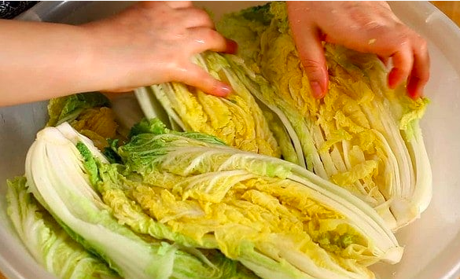

Recipe for Kimchi
Recipe for kimchi is pretty simple.
These are the basic ingredients for the legendary korean spicy vegetable

Napa Cabbage: The most common base for kimchi, though other vegetables can be used as well.
Radishes: Daikon radishes are commonly used, and other varieties may be included for added flavor and texture.
Seasonings: The seasonings typically include garlic, ginger, Korean red pepper flakes (gochugaru), fish sauce, and/or salted shrimp. These ingredients contribute to the unique flavor profile of kimchi.
Home Page